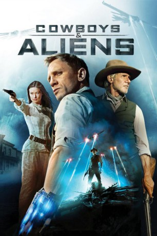

#811 Cowboys & Aliens
 gesehen am 05.09.2015
gesehen am 05.09.2015
 
 IMDB-Wertung: 6.0 / 10
IMDB-Wertung: 6.0 / 10  Metascore: 50
Metascore: 50 
Als ein mysteriöser Mann ohne Erinnerung in der Wüste von Arizona erwacht, findet er ein metallenes Band an seinem Handgelenk vor. Was es mit dem Objekt auf sich hat, weiss auch im nahen Kaff Absolution niemand. Wohl aber, wer er sein könnte: ein gesuchter Verbrecher, auf dessen Kopf ein hoher Preis ausgesetzt wurde. Als der grimmige Colonel Dolarhyde zur Tat schreiten will, bricht plötzlich die Hölle über Absolution herein – stählernde Flugobjekte stürzen aus dem Himmel und eröffnen das Feuer auf die panische Dorfbevölkerung. Um die technologisch weit überlegenen Invasoren zu schlagen, muss sich der Neuankömmling mit den misstrauischen Dörflern, seinem Häscher Dolarhyde und einem Apachen-Stamm verbünden – und das Geheimnis um seine verlorene Erinnerung lüften...
Jahr: 2011
Dauer: 119 Minuten
FSK: 12
Land: USA Studio: Universal PicturesTonspuren: DD5.1 - ,
Untertitel: Deutsch,
Auflösung: 720p (1280x528) Größe: 4116 MB
Genre: Action, Sci-Fi, Thriller, Western
Regisseur:  Jon Favreau
Jon Favreau
Drehbuch: Roberto Orci, Alex Kurtzman, Damon Lindelof, Mark Fergus, Hawk Ostby
Soundtrack: Harry Gregson-Williams
Darsteller:
 Daniel Craig als Jake Lonergan
Daniel Craig als Jake Lonergan Abigail Spencer als Alice
Abigail Spencer als Alice Buck Taylor als Wes Claiborne
Buck Taylor als Wes Claiborne- Matthew Taylor als Luke Claiborne
 Clancy Brown als Meacham
Clancy Brown als Meacham Paul Dano als Percy Dolarhyde
Paul Dano als Percy Dolarhyde Chris Browning als Jed Parker
Chris Browning als Jed Parker Adam Beach als Nat Colorado
Adam Beach als Nat Colorado Sam Rockwell als Doc
Sam Rockwell als Doc Ana de la Reguera als Maria
Ana de la Reguera als Maria- Noah Ringer als Emmett Taggart
 Brian Duffy als Deputy
Brian Duffy als Deputy Olivia Wilde als Ella Swenson
Olivia Wilde als Ella Swenson Keith Carradine als Sheriff John Taggart
Keith Carradine als Sheriff John Taggart Brendan Wayne als Charlie Lyle
Brendan Wayne als Charlie Lyle Gavin Grazer als Ed
Gavin Grazer als Ed Toby Huss als Roy Murphy
Toby Huss als Roy Murphy Wyatt Russell als Little Mickey
Wyatt Russell als Little Mickey Harrison Ford als Woodrow Dolarhyde
Harrison Ford als Woodrow Dolarhyde Walton Goggins als Hunt
Walton Goggins als Hunt Julio Cedillo als Bronc
Julio Cedillo als Bronc David O'Hara als Pat Dolan
David O'Hara als Pat Dolan Raoul Max Trujillo als Black Knife
Raoul Max Trujillo als Black Knife David Midthunder als Apache Warrior 1
David Midthunder als Apache Warrior 1- Mo Brings Plenty als Apache Warrior 2
- Rex Rideout als Fiddler
 Maria Bethke als Polka Dancer , uncredited
Maria Bethke als Polka Dancer , uncredited David Cohen als Townsperson , uncredited
David Cohen als Townsperson , uncredited- Amanda Fresquez als Prostitute , uncredited
- Mylo Ironbear als Apache Warrior 3 , uncredited
 Richard Allan Jones als Alien Slave , uncredited
Richard Allan Jones als Alien Slave , uncredited- Paul Marshall als Slave , uncredited
- Alexandria Morrow als Lady O Da Night , uncredited
- Giuseppe Quinn als Running Man in Absolution , uncredited
- Adrian Kali Turner als Emmett Taggart , uncredited
- Charlene Adams Upton als Polka Dancer , uncredited
- Cooper Taylor als Mose Claiborne
- Jimmy Jatho als Saloon Patron
- Kenny Call als Greavy
- Garret Noël als Gang Member
- Troy Gilbert als Red
- Chad Randall als Bull McCade
- Scout Schoenfeld Hendrickson als Jake's Gang Member
- Phillip Pike als Apache Singer
- Calum Blaylock als Apache Singer
- Paul Ortega als Medicine Man
- Nathaniel Chee als Apache Dancer
- Robyn Simmons als Apache Dancer
- Simon Choneska als Apache Dancer
- David Chee als Apache Dancer
Datei: X:\2011(A-F)\Cowboys & Aliens (2011, FSK12, 1280x528).mkv seit 27.03.2015
Festplatte: HD 2010(G-Z)-2011(A-F)
 Es gibt insgesamt 86 Filme in der Gruppe '2011(A-F)'
Es gibt insgesamt 86 Filme in der Gruppe '2011(A-F)'